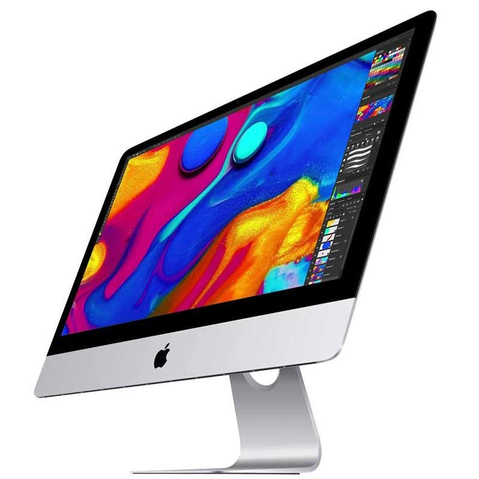
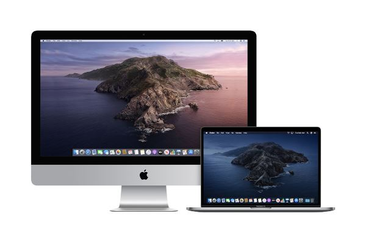

Mac



MacBook — бренд ноутбуков линейки Macintosh на операционной системе macOS, разработанный корпорацией Apple. В 2006 году заменил бренды PowerBook и iBook во время перехода с PowerPC на Intel x86.
Текущая линейка состоит из MacBook Air (с 2008 года) и MacBook Pro (с 2006 года).
Ранее выпускались линейки под названием MacBook: первая версия с 2006 по 2012 год, вторая — с 2015 по 2019 год.
10 ноября 2020 года Apple анонсировала модели MacBook Air и MacBook Pro с новой системой Apple M1, а 18 октября 2021 года завершила перевод всех моделей MacBook на новую архитектуру.
iMac — серия моноблочных персональных компьютеров, созданная корпорацией Apple Inc. в 1998 году.
В компактном корпусе компьютера собраны монитор и все системные компоненты, включая привод SuperDrive (англ.)рус. CD/DVD c щелевой загрузкой (начиная с модели 2012 года отсутствует, можно купить отдельно в виде внешнего оптического привода). Остается лишь подключить клавиатуру и мышь, (и то, и другое в комплекте, но можно выбрать свою комплектацию) — и компьютер готов к работе. В корпус встроены динамики, фото/видеокамера, беспроводная связь Bluetooth и Wi-Fi. С компьютером поставлялся пульт дистанционного управления, с помощью которого можно управлять воспроизведением музыки, видео и фотоколлекций.
Продукция Apple
iPhone
iPad
AirPods
Apple Watch